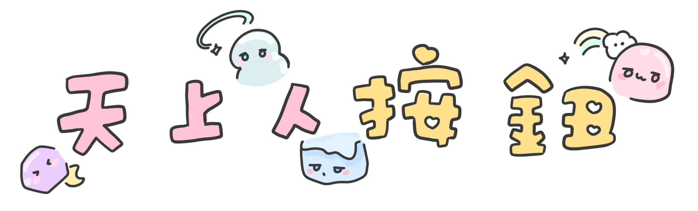

天上人按鈕

欸
粉紅貓很凶狠啊
你死了
你被打死了是嗎
餓啊啊啊
冰霧慘叫
完了完了完了
多人一點比較好玩
我要先跟自己人打
冰霧！
白～吧虹
我是油
你好賊喔
吼！
色拉斯蒂歐
到底要怎麼打人
走開
我是巨乳
巨乳
呼呼
呼呼呼
哇！你連隊友都打
快點打那隻鴨子
不要過來拉
有人吃毒
你這樣以後嫁不出去啦
對不起
哇啊
唱歌擔當幻月
欸～～
欸欸欸
怎麼了！
拯救
啊
應該是已經死透了
嘔
大家好我是幻月G2G2
我們抱在一起.
集體中毒
2023/ 10/ 01 update ▶︎
我
我
炸彈
お前ふざけんなよ
奶皇包
這怎麼有一隻在發狂的狗啊
崩潰冰塊
崩潰白虹
亞
嘔2
射了
崩潰月亮
魔音傳腦
開門開門開門
關門關門關門
死光光
婷婷不要不要不要
shi...
咳
不要
這隻老虎在key笑
小麵包很強
超可怕的
歐妲(？？？？)
你抓誰哇喔